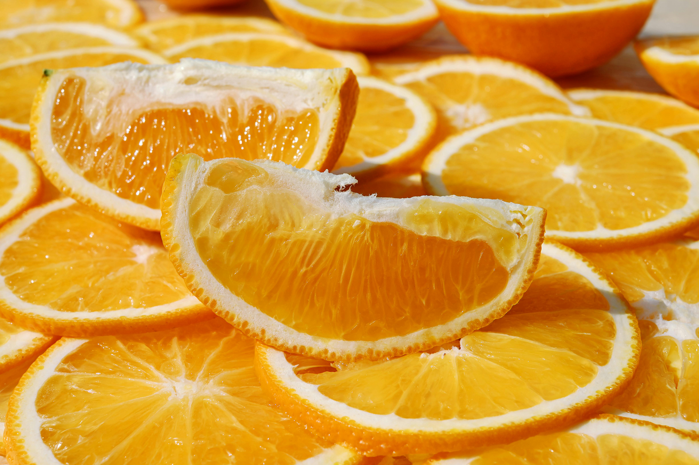
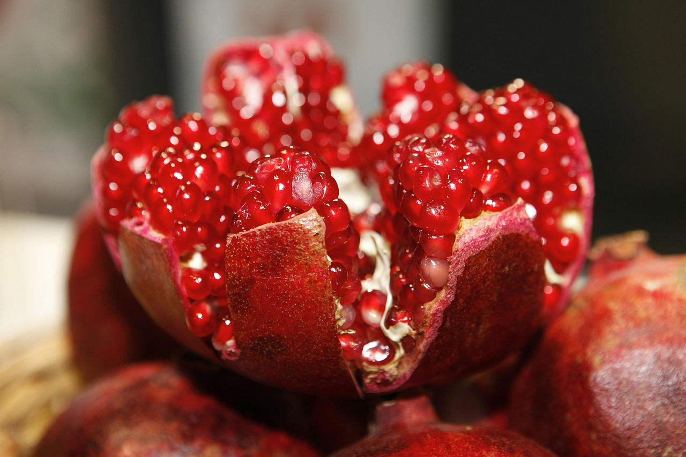
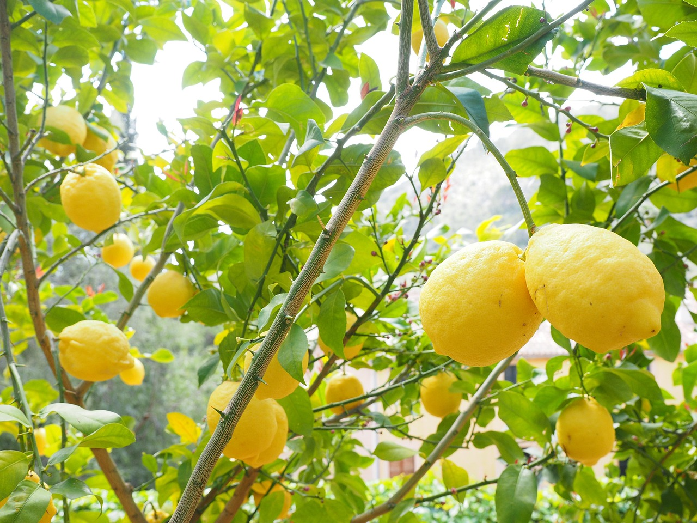
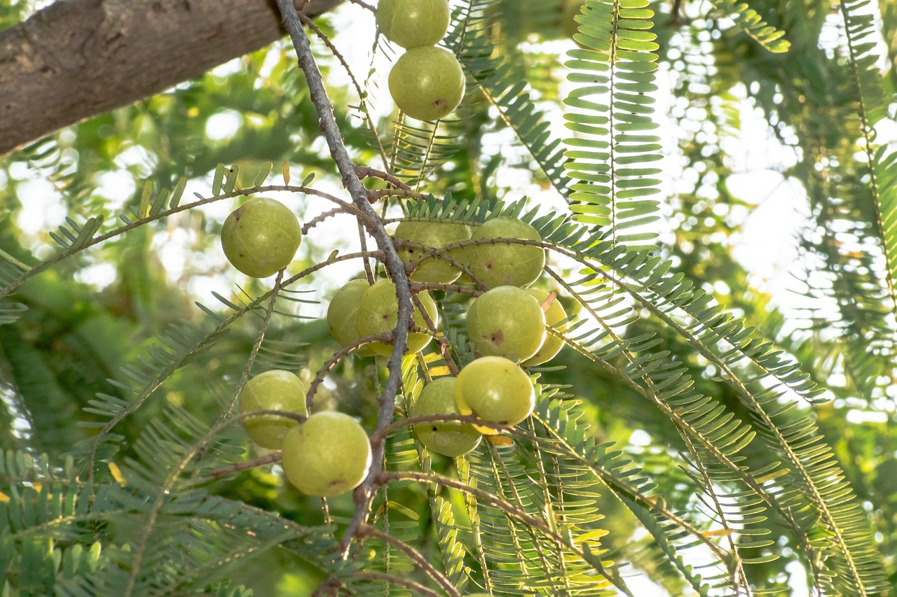
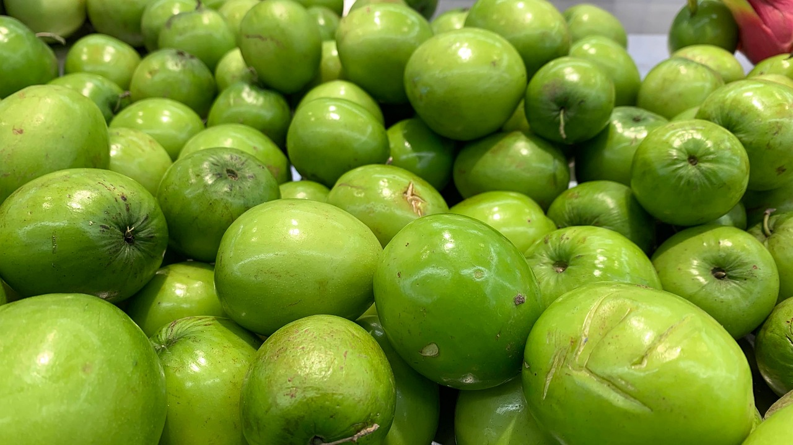
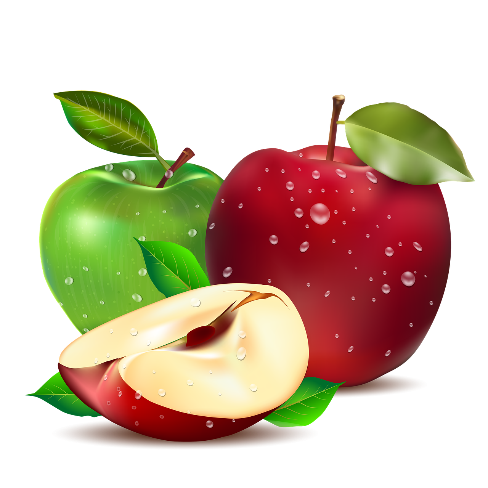

কমলা
- ভিটামিন C-এর ভালো উৎস।
- রোগ প্রতিরোধ ক্ষমতা বাড়ায়।
- ত্বক উজ্জ্বল রাখে।
Precaution: খাওয়ার আগে ভালো করে ধুয়ে নিতে হবে, অতিরিক্ত খেলে পাকস্থলীতে সমস্যা হতে পারে।

ডালিম
- রক্ত পরিষ্কার করে।
- অ্যান্টি-অক্সিডেন্টে ভরপুর, তাই বয়স্কদের জন্য উপকারী।
- হৃদরোগ প্রতিরোধে সাহায্য করে।
- হজম ভালো রাখে।
- ত্বক সুন্দর ও উজ্জ্বল করে।
Precaution:
খাওয়ার আগে ভালোভাবে ধুয়ে নিতে হবে যাতে ব্যাকটেরিয়া বা কীটপতঙ্গ না থাকে।

লেবু
- ভিটামিন C-এর চমৎকার উৎস।
- দেহকে হাইড্রেটেড রাখে এবং ডিটক্সিফাই করতে সাহায্য করে।
- ত্বক উজ্জ্বল ও স্বাস্থ্যবান রাখতে সহায়তা করে।
- হজম প্রক্রিয়া উন্নত করে এবং ঠান্ডা-জ্বর কমাতে সাহায্য করে।
Precaution: বেশি মাত্রায় লেবুর রস পান করলে দাঁতের এনামেল ক্ষতিগ্রস্ত হতে পারে, তাই সাবধানতা অবলম্বন করা উচিত।

আমলকি
- ভিটামিন C এর সবচেয়ে ভালো উৎস।
- ত্বক ও চুলের জন্য খুব ভালো।
- রোগ প্রতিরোধ ক্ষমতা বাড়ায়।
Precaution: বেশি খাওয়া থেকে বিরত থাকুন, বিশেষ করে অ্যাসিডিটির সমস্যা থাকলে।

বরই
- ভিটামিন C সমৃদ্ধ।
- পেট ও হজম ভালো রাখে।
- রোগ প্রতিরোধ ক্ষমতা বাড়ায়।
Precaution: বেশি পরিমাণে খেলে পেটের সমস্যা হতে পারে।

আপেল
- ফাইবার সমৃদ্ধ, হজমে সাহায্য করে।
- হৃদরোগ ও ডায়াবেটিস প্রতিরোধে সহায়ক।
- ওজন নিয়ন্ত্রণে সাহায্য করে।
Precaution: খাওয়ার আগে ভালো করে ধুয়ে খেতে হবে, ছালসহ খাওয়া ভালো।